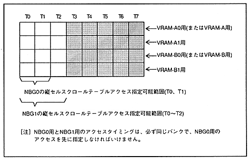

When using the vertical cell scroll function in NBG0 and NBG1, the vertical cell scroll table data must be read in addition to the pattern name data and character pattern data (bitmap pattern data). Vertical cell scroll table data read access is required once per cycle per cycle. The vertical cell scroll table data read access for NBG0 must be specified at the timing of T0 or T1, and the vertical cell scroll table data read access of NBG1 must be specified at the timing from T0 to T2. Hmm. Also, access for NBG0 and NBG1 must be specified in the same bank, and access for NBG0 must be specified first.
When specifying the same vertical cell scroll table data read access for multiple banks, it must be specified at the same access timing.
∙ Access specification restrictions for vertical cell scroll table data are shown in Figure 3.5.
Figure 3.5: Restricted access specification for vertical cell scroll table data
